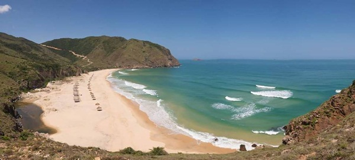
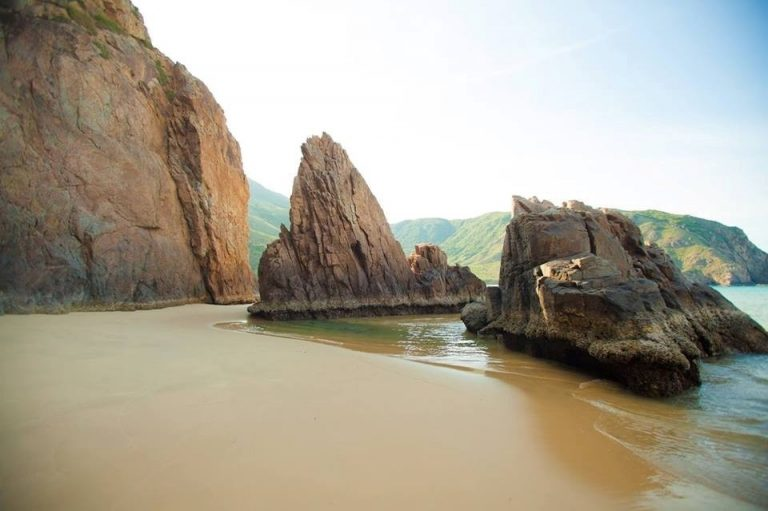
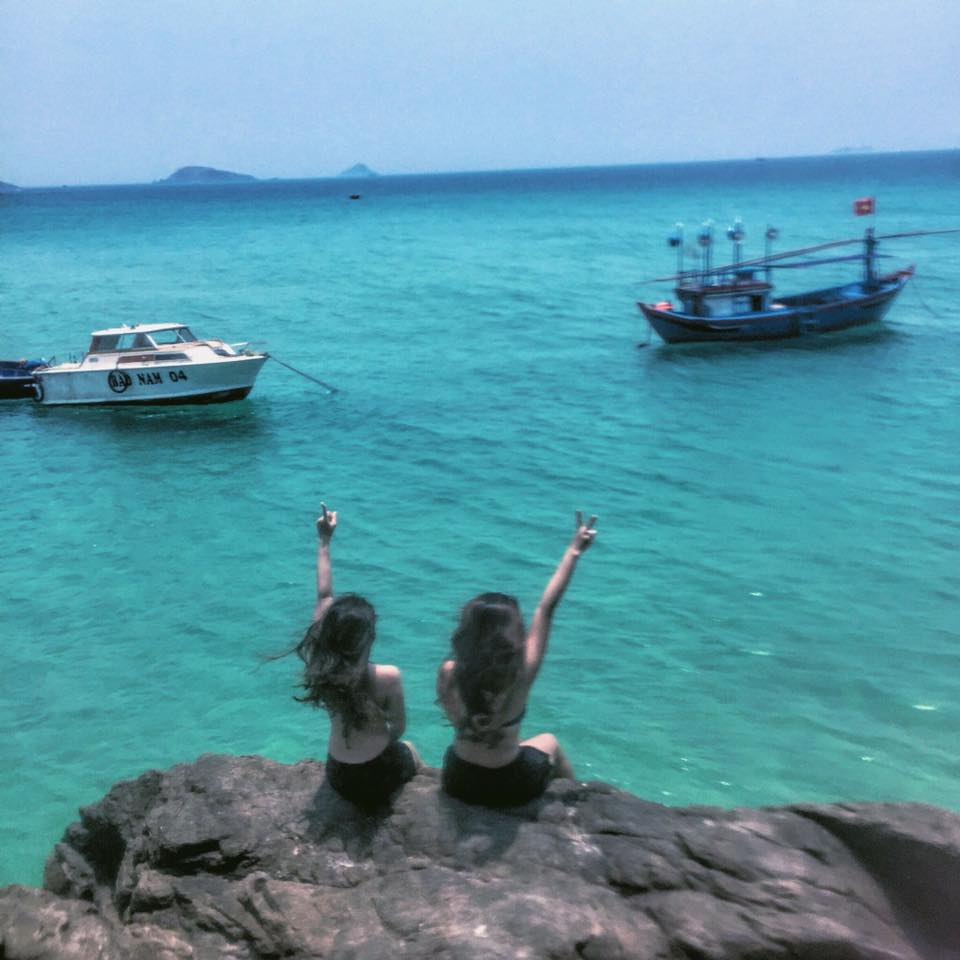
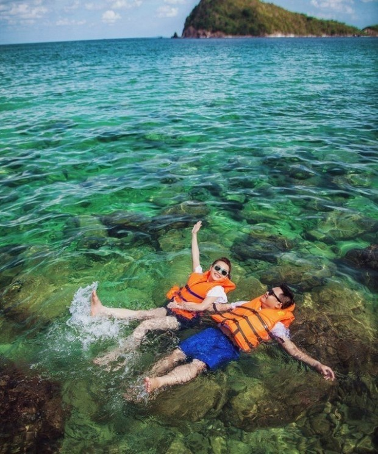
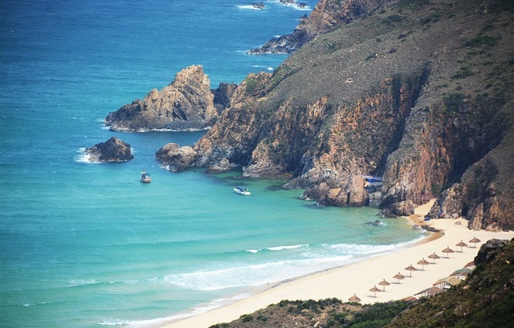
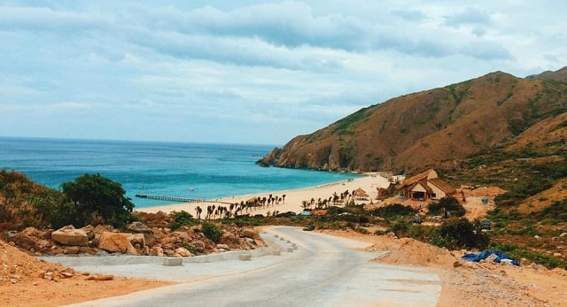
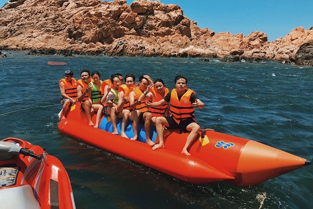
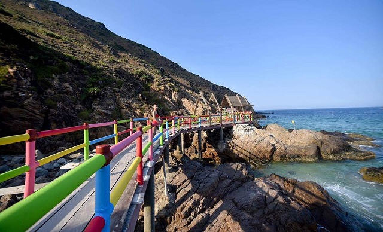
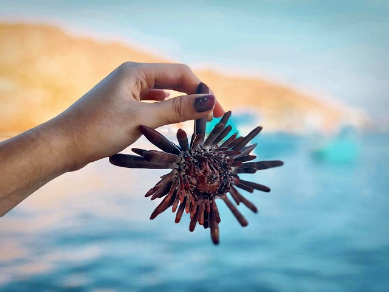
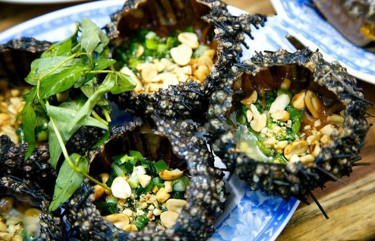

Kỳ Co nằm cách trung tâm thành phố Quy Nhơn hơn 20 km về phía đông nam. Đây được coi là một địa điểm du lịch lý thú nhất tại Quy Nhơn với 2 mặt giáp núi và một mặt giáp biển. Rất thích hợp cho các dân phượt bằng xe máy. Bạn có thể di chuyển bằng ô tô nhưng đi bằng xe máy sẽ tiện hơn cho việc tham thú và khám phá nơi này.
 Biển Kỳ Co nằm ở vị trí vô cùng đặc biệt.Quy Nhơn có khí hậu ôn hòa thế nên bạn có thể đến đây vào bất cứ thời gian nào trong năm nhưng để thuận tiện nhất thì bạn nên đi vào thời gian khoảng từ tháng 2 đến tháng 8. Lúc này thời tiết mát mẻ, ít mưa hơn dễ dàng cho việc đi lại và thăm quan.
Tới đây bạn sẽ bị choáng ngợp bởi vẻ đẹp hoang sơ kì vĩ, thiên nhiên hòa hợp. Đứng từ xa bạn sẽ nhìn thấy cảnh núi non hùng vĩ, những tầng cây xanh rợp bóng mát, không khí thoáng đãng, gió tạt mạnh vào người mang theo hơi mặn chát đặc trưng của biển. Kỳ co có hướng vòng cung như vầng trăng khuyết của những ngày thường nhật.
 Những hang đá lộ ra ở bãi biển Kỳ Co khi nước triều rút.Vào buổi sáng khi mặt trời vừa ló rạng nước biển Kỳ Co trong xanh như một tấm gương phản chiếu của bầu trời. Bạn có thể ra biển sớm để ngắm nhìn cảnh hoàng hôn thơ mộng. Những giọt sương mai còn đọng lại trên những phiến lá rơi nhỏ từng giọt vào lòng cát mịn. Thật yên tĩnh, thật thanh bình dễ chịu. Ánh mặt trời đỏ lừ, dần dần hiện ra sau đám sương mây mờ ảo. Những con thuyền chập trùng trên biển với câu hát khoan hò cho một ngày rạng rỡ bội thu.
Không chỉ thế ở đây còn có những vách đá, tảng đá to, phần chân vuông càng lên cao càng nhọn hoắt nhô lên giữa biển trông như những chiếc tháp nhỏ hay ngọn chông chọc lên bầu trời. Khi nước thủy triều rút xuống mọt con đường men theo vách đá sẽ hiện ra. Bạn còn có thể đi dọc theo dài vực núi gần bờ để đi ra thăm thú biển. Lội trong làn nước mát lành, đùa nghịch cùng sóng biển, lật những cọng rong rêu biển để bắt những động vật biển bé nhỏ.
Đặc biệt, bạn hãy lên lịch thưởng thức trọn vẹn biển Kỳ Co Quy Nhơn bằng việc ngắm san hô ở Bãi Dứa. Đi ghe, thuyền ra Bãi Dứa rất phổ biến, bạn có thể hỏi và hẹn lịch với các chủ ghe ở khu vực bãi biển trong ngày đầu tiên đến để có kế hoạch ra Bãi Dứa vào ngày nắng đẹp, tránh ngày mây mù u ám.
 Nước biển Kỳ Co xanh trong vắt.Bạn chỉ cần chuẩn bj những đồ dùng cần thiết như một chiếc ao phao, kính dâm… là bạn có thể bơi trên mặt nước biển ngắm nhìn cảnh sắc biển trời và những dặng san hô nhiều mùa sắc thú vị.
Du khách tới đây còn có thể thuê thuyền hay cano để đi khám phá biển, đi câu cá. Hoặc theo ngư dân ra biển để xem công việc đánh bắt hải sản thường ngày của họ.
Nằm cách trung tâm thành phố Quy Nhơn gần 25km, Kỳ Co là một bãi biển rất đặc biệt. Đường bờ biển cong như lưỡi liềm với 3 mặt giáp núi và 1 mặt giáp biển. Do đó, để di chuyển đến biển Kỳ Co du khách sẽ phải trải qua 2 chặng đường. Thứ nhất là từ điểm xuất phát của bạn di chuyển đến thành phố Quy Nhơn. Thứ hai là di chuyển từ bến xe, bến tàu, sân bay tới bãi Kỳ Co.
 Cách di chuyển tới bãi biển Kỳ Co:Ở bài viết này mình sẽ chia sẻ cách di chuyển đến Quy Nhơn từ 2 thành phố lớn là Hà Nội và Hồ Chí Minh. Có nhiều phương tiện di chuyển tới Quy Nhơn mà du khách có thể tham khảo như:
Máy bayTừ Hà Nội, Hồ Chí Minh có đường bay thẳng đến sân bay Phù Cát (cách trung tâm thành phố Quy Nhơn khoảng 35km), do đó du khách dễ dàng di chuyển mà không hề tốn kém nhiều thời gian. Tuy nhiên giá vé máy bay giao động theo mùa nên bạn cần tham khảo kỹ trước khi mua vé du lịch.
Tàu hoảTàu hỏa là một lựa chọn khá an toàn và thoải mái cho du khách đặc biệt với những ai có thời gian và muốn tiết kiệm chi phí hơn. Du khách có thể lựa chọn tới ga Diêu Trì (cách thành phố Quy Nhơn khoảng 15km), sau đó mua vé đi tiếp ga Quy Nhơn. Nếu du khách ở TP. Hồ Chí Minh thì có chuyến tàu đi thẳng tới ga Quy Nhơn tuy nhiên chỉ có một chuyến mỗi ngày.
Xe kháchNếu từ Hà Nội bạn có thể chọn xe giường nằm xuất phát từ bến xe Giáp Bát, Nước Ngầm đi bến xe Quy Nhơn. Nếu đi xe khách từ Sài Gòn thì bạn nên xuất phát từ chiều tối hôm trước để đến Quy Nhơn vào sáng sớm hôm sau. Hiện nay có nhiều nhà xe ở Sài Gòn với nhiều lựa chọn về thời gian và địa điểm cũng như chi phí để du khách lựa chọn.
Đầu tiên từ các địa điểm, du khách sẽ di chuyển tới xã Nhơn Lý. Bạn có thể đi theo hướng dẫn của google maps để tới cầu Thị Nại, sau đó gặp vòng xuyến thì rẽ trái đi Nhơn Lý. Tại đây du khách có thể di chuyển tới Kỳ Co bằng đường bộ hoặc đường biển.
Với những bạn yêu thích trải nghiệm, có thể lựa chọn xe máy hoặc đi ô tô gia đình để có thể dừng lại checkin những cảnh đẹp trên đường một cách thoải mái. Tuy nhiên nếu đi Kỳ Co bằng đường bộ thì bạn sẽ không thể lặn ngắm san hô tại Bãi Dứa nên các bạn cần cân nhắc lựa chọn nhé.
 Chạy xe máy theo con đường vòng quanh núi để tới Bãi Kỳ CoNếu muốn trải nghiệm cảm giác lênh đênh trên sóng nước và ngắm cảnh núi non hùng vì thì bạn hãy chọn đến Kỳ Co bằng đường biển. Từ Quy Nhơn, bạn di chuyển tới Eo Gió thuộc xã Nhơn Lý, sau đó đi cano hoặc ghe ra biển Kỳ Co. Thông thường cano sẽ đón du khách tại bến Nhơn Lý, di chuyển khoảng 15 – 20 phút là tới bãi Kỳ Co rồi.
Nếu đã đến đây thì bạn nhất định phải hòa mình vào làn nước trong xanh để cảm nhận rõ sự thú vị và tuyệt vời của bãi biển Kỳ Co. Được mệnh danh là Maldives của Việt Nam, Kỳ Co mang vẻ đẹp hoang sơ làm say mê lòng người.
Cắm trại trên bờ biểnVới những ai yêu thích trải nghiệm và khám phá thì cắm trại qua đêm tại Kỳ Co chắc chắn sẽ là một trải nghiệm đáng nhớ. Bạn có thể mang theo lều, một chút đồ ăn nhẹ rồi chọn những đặc sản của vùng biển Nhơn Lý để nướng BBQ ngay trên bãi biển.
Tham gia các hoạt động trên biểnNgoài tắm biển, du khách tới đây còn có thể thoải mái tham gia các hoạt động, trò chơi được tổ chức trên bãi biển Kỳ Co như dù bay, mô tô nước, phao chuối,…Và nếu bạn đi theo một đoàn đông thì còn có thể tổ chức các trò chơi team building thú vị cho mọi người nữa nhé.
 Check in Hồ Suối Kỳ Co, cầu Hang YếnNghỉ dưỡng và check in tại hồ suối Kỳ Co, cầu Hang Yến là một trải nghiệm thú vị mà bạn không nên bỏ lỡ khi đến với bãi biển Kỳ Co. Cây cầu với nhiều màu sắc nổi bật với một bên là núi một bên là biển cũng là điểm không thể bỏ qua tại Kỳ Co Quy Nhơn.
 Vẻ đẹp cầu Hang Yến Lặn biển ngắm san hôDu khách có thể tham gia hoạt động lặn biển ngắm san hô, đi bộ và khám phá các loài động, thực vật dưới đáy biển. Đây chắc chắn sẽ là là một dấu ấn đặc biệt trong chuyến du lịch của bạn. Hãy đảm bảo mang theo các dụng cụ bảo hộ và chống nắng khi đi lặn biển nhé. Lưu ý những khu vực có nhiều san hô có thể khiến chân bạn bị bị rách nếu không cẩn thận, hãy quan sát kỹ hoặc có thể đi giày lặn để đảm bảo an toàn.
 Ẩm thực Kỳ CoKhi đến du lịch tại Kỳ Co bạn không chỉ được đắm mình trong cảnh sắc thiên nhiên hong sơ tuyệt đẹp mà bạn còn có thể được thưởng thức món đặc sản vô cùng thơm ngon. Đặc biệt là những món ăn hải sản rất tươi, được chế biến ngay sau khi đánh bắt để giữ được độ thơm ngon của hải sản. Bạn không thể bỏ lỡ một số món hải sản ngon ở đây như: bào ngư, mực khô một nắng, mực tươi, cua biển, tôm hùm, nhum… với giá chỉ từ 280.000 ngàn đến 330.000 một món.
Nhum nướng: Khi đến bãi biển Quy Nhơn ắt hẳn bạn đã được nghe hoặc được nếm thử món ăn này. Tuy nhiên phải được thưởng thức ngay trên đảo Kỳ Co thì mới thú vị. Còn gì thích thú hơn khi cả gia đình cùng ngồi trên triền cát, gió biển mát rượi thổi tạt vào mặt quây quần cùng gia đình cùng nướng nhum, thưởng thức ngay tại biển.
Nhum biển rất thơm ngon, thịt ít nhưng rất chắc, những múi thịt kết dính vào nhau như múi cam. Nhum được bắt về, bổ đôi, làm sạch thịt, trút bỏ dạ dày ướp gai vị để nướng. Thit nhum rất thanh mát và ngon. Làm say đắm lòng khách du lịch.
Các loại ốc nướng: Mùi ốc nướng tỏa hương nghi ngút, làm nao lòng du khách, mới ngửi thôi đã thấy thèm. Ốc biển có thể chế biến thành nhiều món nướng ngon tuyệt.
Bào ngư: Cháo bào ngư là lựa chọn tuyệt vời dành cho bạn. Làn cháo ngọt thơm nóng hổi, giàu chất dinh dưỡng. Là thức quà quý giá mà thiên nhiên ban tặng nơi đây.
Thú vui không thể thiếu đó là đi du ngoạn trên chiếc thuyền nan câu những con mực tươi ngon nhất. Rồi tự tay chế biến những con mực thơm ngon, hưởng thụ thành quả do tay mình làm ra.
Bãi tắm Kỳ Co là một địa điểm du lịch thích hợp cho du lịch gia đình, vui chơi cùng gia đình. Bạn đã sẵn sàng để đến du lịch Bãi Kỳ Co Quy Nhơn chưa? Vntrip.vn tin rằng ai đã từng ghé thăm biển Kỳ Co sẽ luôn có một mong muốn được quay trở lại đây, để lại được đắm mình trong làn nước biếc xanh, được tận hưởng những ngày nghỉ như thiên đường tại vùng biển này.